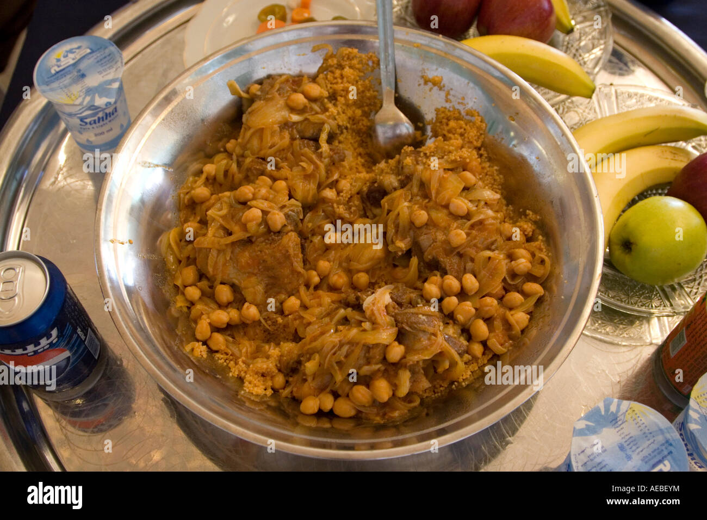

coscose

Description
The national dish of Libya is couscous,
commonly prepared like this, with stewed beef, sweet potatoes,
carrots and garbanzo beans in a spicy hararat tomato sauce.
It’s a warming, hearty, comfort dish featuring
a delicious blend of Middle Eastern spices
Ingredients
- 1 pound stewing beef, cut into four pieces
- 1 1/2 tablespoons oil for frying
- 1 large onion, halved and cut in half rings
- 1 tablespoon extra virgin olive oil
- 3 garlic cloves, finely chopped
- 2 medium potatoes, peeled and halved
- 2 carrots, halved
- 8 ounces pumpkin or yam, cut into four chunks
- 1 cup cooked garbanzo beans
- 1 bay leaf
- 1 teaspoon hot chili powder
- 2 tablespoons hararat (see recipe below)
- 1/3 cup tomato purée
- 1/2 cup chopped tomatoes
- 1 tablespoon brown sugar
- 1 1/2 teaspoons salt
- 3 cups beef broth
- Oil for frying
Steps
- Heat a large non-stick frying pan and toast the hararat spices for 4 minutes, stirring frequently. Cool and grind in a spice grinder. Store in an airtight jar.
- Heat oil in a Dutch oven over medium-high heat. Brown the beef on all sides.
- Add the onion and cook until soft, about 5-7 minutes. Add the garlic and cook for 1 more minute.
- Stir in chili powder, hararat, tomatoes, tomato purée, beef stock, salt, and brown sugar. Bring to a boil, reduce to a simmer, cover, and cook for 30 minutes.
- Add the vegetables and garbanzo beans. Bring to a boil again, reduce the heat, cover, and simmer for 40 minutes until the vegetables and beef are tender, and the sauce thickens.
- To serve, place couscous on a platter, arrange the meat and vegetables on top, and ladle the sauce over everything.